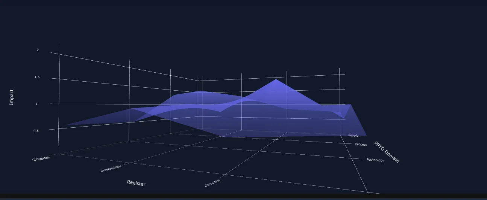

MIAF
A four-register analytical framework for distinguishing genuine military innovation from technical modernization. Human-led scoring with adversarial AI challenge. Validated against 28+ historical cases spanning 1000 years.

Explore Tool
Interactive assessment with adversarial AI challenge and validated historical cases.
Launch MIAF Tool →The Four Registers
Conceptual: Does the innovation restructure how practitioners conceptualize problems, solutions, or strategic possibilities?
Irreversibility: To what degree does adoption create path dependencies that prevent reversion to previous approaches?
Disruption: How significantly does the innovation alter competitive dynamics, strategic calculations, or operational paradigms?
Generative: Does the innovation enable fundamentally new capabilities, operational concepts, or strategic possibilities?
PPTO Mapping
People: Training, expertise, cognitive frameworks
Process: Operational procedures, decision cycles
Technology: Material systems, interfaces
Organization: Structure, command hierarchies
Adversarial AI Challenge
MIAF uses an adversarial AI agent in three distinct roles, each designed to challenge the user's scoring without replacing it.
- Viability gate. Before scoring begins, the agent evaluates whether the proposed innovation is feasible in scientific terms and prospectively achievable against other criteria.
- Per-register interrogation. After the user scores each register, the agent interrogates the scoring decision. The user can recalibrate based on the agent's argumentation — at the register and sub-component level.
- Macro evaluation. Once full scoring is complete, the agent evaluates the macro score across all registers and PPTO domains.
The agent is deliberately restricted from providing its own scores. It presents a "for and against" argument for each score — individual and macro — but does not adjudicate. The user's judgement is the final word. An adversarial counter to AI-led scoring is in active development; until that exists, AI-led adjudication is not part of the framework.
Validation
MIAF has been validated against 28+ historical military examples spanning over 1000 years — from gunpowder to GPS-guided munitions and network-centric warfare. The framework demonstrates consistent analytical discrimination between genuine innovations and technical modernizations across this set.
Validation is against the historical corpus. MIAF produces evidence-grounded analytical discriminations within the framework — not predictions of any particular innovation's strategic future.
Applications
Defense Assessment
Strategic evaluation of emerging military technologies
R&D Investment
Portfolio management for innovation programs
Historical Analysis
Retrospective assessment of transformations
Comparative Studies
Cross-domain innovation pattern analysis